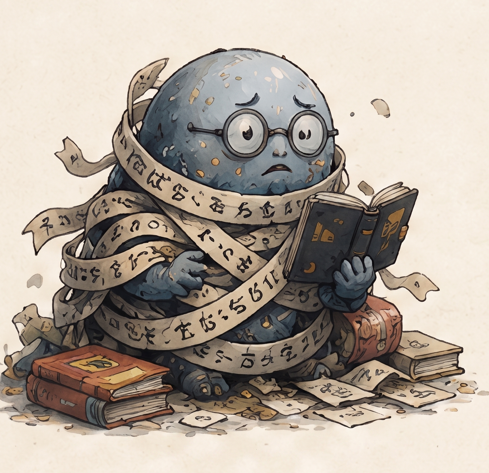
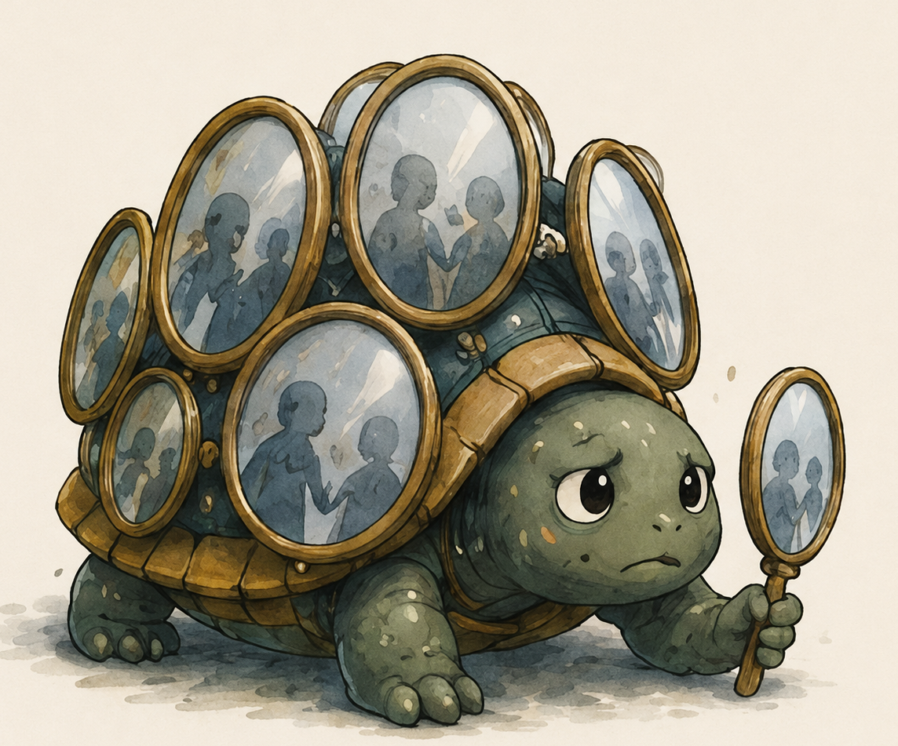
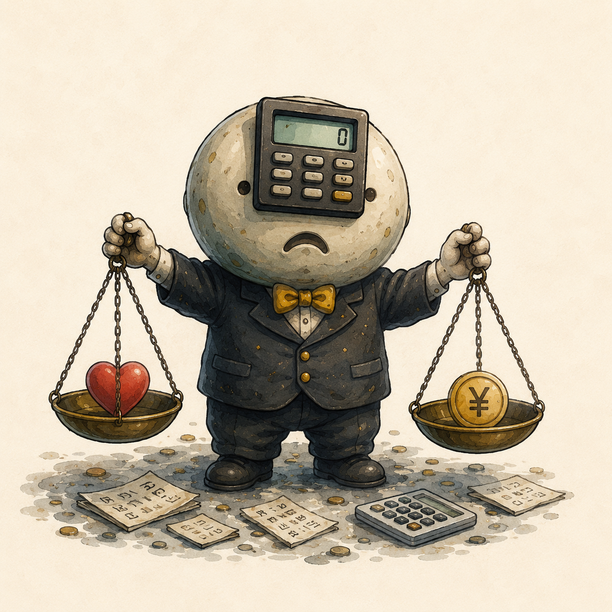
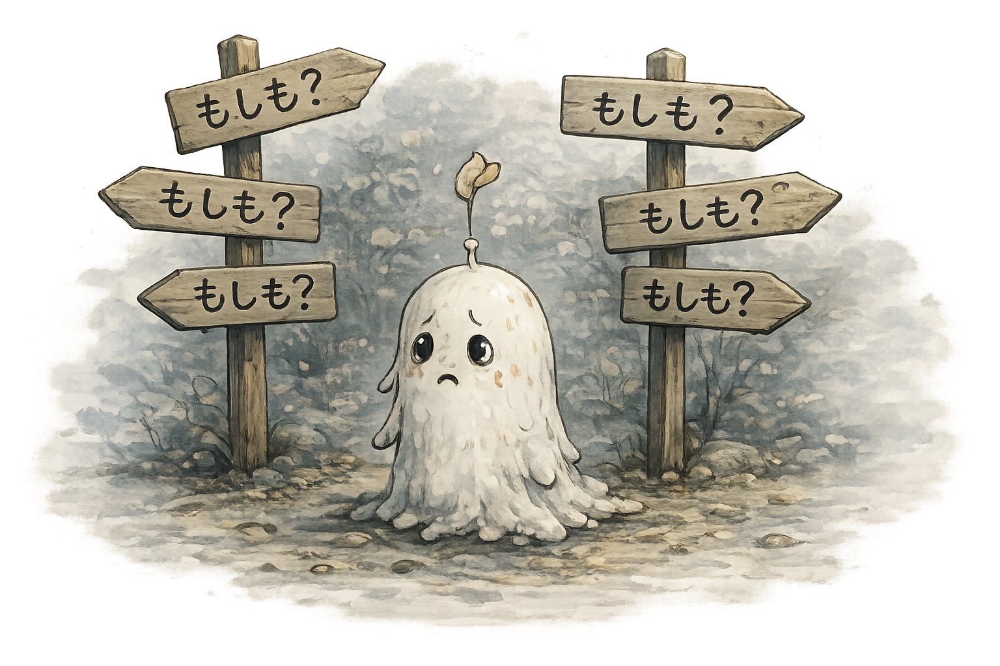
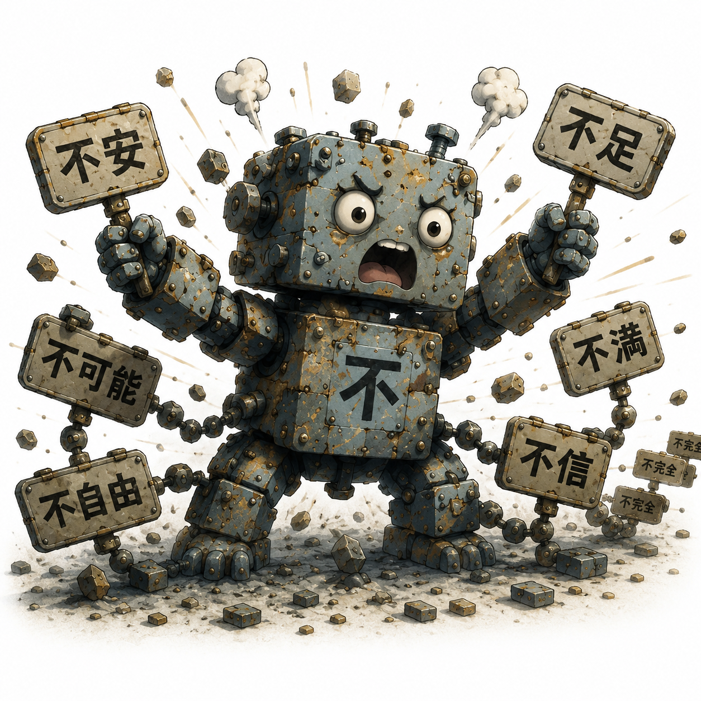
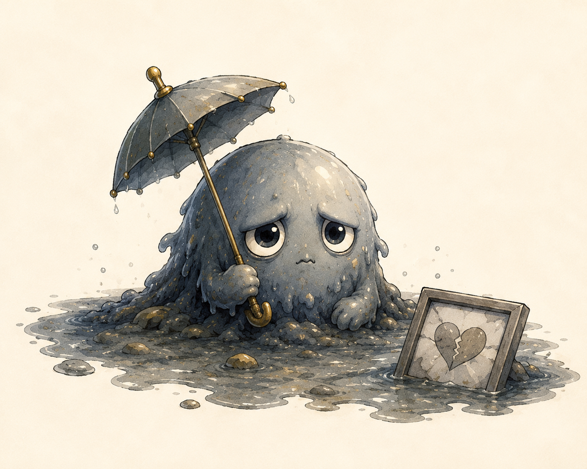

認識OSが映し出す6体のモンスターたち

とても真面目。責任感が強い。頼まれてもいないのに、「ちゃんとしなきゃ」を増やしてしまう。むしろ、プレイヤーを守っているつもり。
戦わない。追い払わない。まず「あ、ネバナラヌが来た」と気づく。余白が生まれるほど、ネバ度が減りグレーを楽しめるようになる。
「ねぇ。『こうしなきゃ』って思ったら、その声を、少しだけ聞いてみて。ネバナラヌは、認識が積み重なって、少しずつ形になったんだ。だから、『あ、いたんだ。』その一言だけで、認識OSは、静かに動き始めるよ。」

とても敏感。細かいところまでよく見ている。すぐに「違い」を見つけることが得意。プレイヤーには、正確な地図を渡そうとしているつもり。
「あ、クラベルが来た」と気づくのは少し難しい。でも映しているのが「差」ではなく「自分の見え方」だと知ると、水面の意味がだんだん変わり始める。
「差を見つけ出すのが得意すぎるだけ。クラベルが出た時、誰かのせいや環境のせいにしたくなるね。水面に映っているの、本当は誰だと思う？ 気づくと、鏡じゃなくて窓になるよ。」

とても合理的。無駄が苦手。「どちらが得か」をすぐに計算してしまう。プレイヤーが損をしないよう守っている。
ソントクが動き出したら、人生には計算できない豊かさもあると一度立ち止まる。いつもと逆のことをしたり、インスピレーションを取りにいく。すると、天秤は静かに揺れ始める。
「ちょっと計算が好きすぎるだけ。損をした時も実は深いところでは思い通りだったな。人生には、計算できない豊かさもあるんだ。時にはボーダーラインを緩やかにしておくんだ。」

とても想像力が豊か。可能性を見つけるのが得意。「もしも」を増やし、プレイヤーが備えられるよう守っているつもり。
「モシモが、まだ起きていないことを考えさせている」と気づく。今この瞬間に意識を合わせると、無数の分岐は静かな可能性へと変わっていく。
「まだ起きていないことを、考えるのが大好きなんだ。今出ていないことを引っ張り込まなくていいんだよ。今の心が次の心をつくっているんだよ。毎瞬、毎瞬が宝だよ。」

「不」を見つけ「不」を増殖させるのが得意。一つ見つけると、次の「不」も止まらない。むしろ、全部足りないところを見つければ安心できると信じている。
「不」は創造の入口だったことを思い出す。ただ一時的に埋めてもフノレツは消えない。全ては心を映す世界。
「一つ『不』を見つけるとね、仲間をどんどん呼んじゃうんだ。最初の『不』に気づくと、列は長くならないよ。創造力の翼を全開にするチャンスだね。『不』の列は最高におもしろい！だってここから生み出るんだから。」

とてもまじめ。頑張った人のそばに、そっと現れる。「これだけ頑張ったんだから」「報われてほしい」そう願っている。だから、期待が大きくなるほど、小さく「……のに」とつぶやく。
「のに」は、頑張った証でもある。期待を少しずつ手放し、それは行かなくていい道だったと知るとノニは少しずつ小さくなる。たまに姿を現すが、透明度を増していく。
「一生懸命だったから、『のに』って言いたくなる日もある。『のに』は、頑張った証なんだ。映す世、聞こえてくる世界にとらわれずいこう。時に矛盾があっても突き進むことがカギなんだ。」